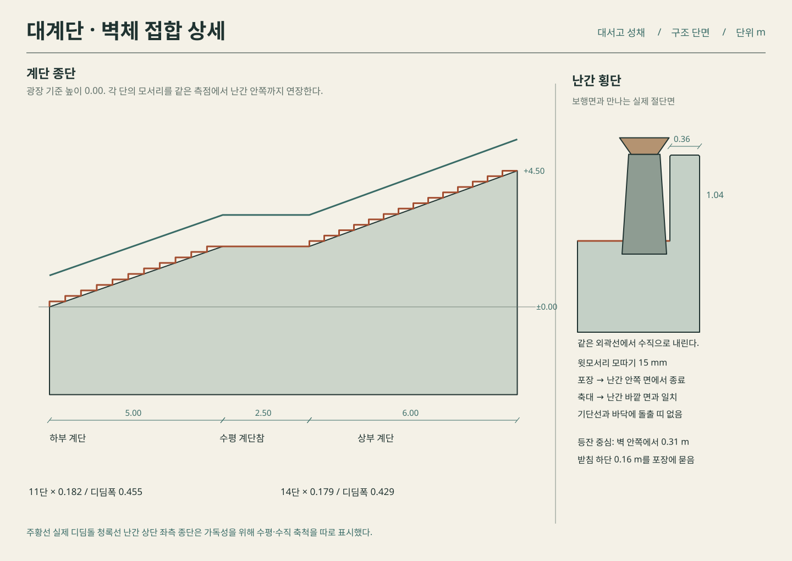
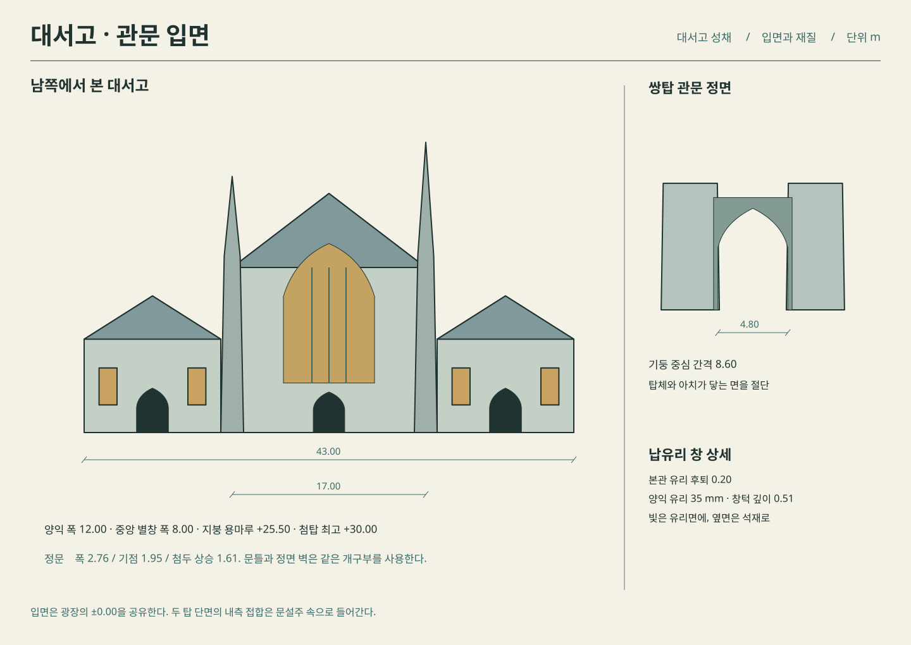
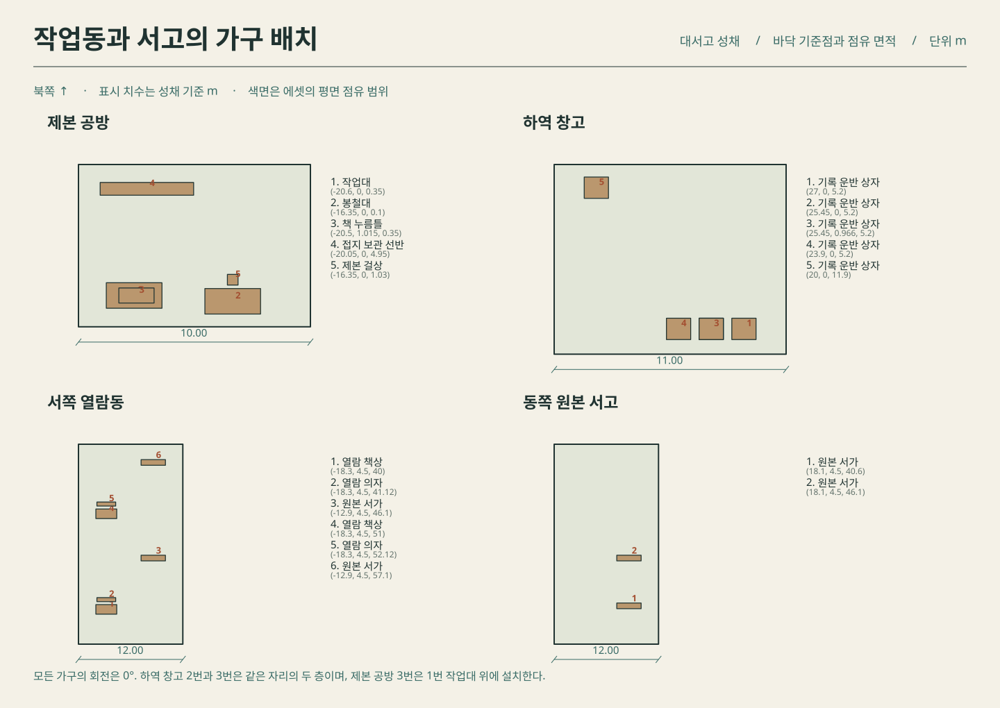
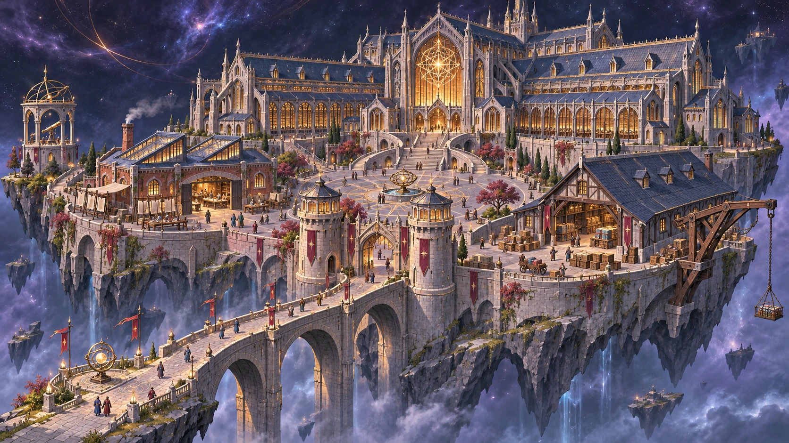

별바다 선착장
현무암 섬, 판석, 낮은 성벽
외곽 점열을 따라 섬을 만든다. 북동쪽은 석교, 서쪽 하역면은 개방한다.
상단 −2.00 · 암반 깊이 10 · 시작 (−15, −36.5)
암반의 푸른 파단면이 밝은 바닥 가장자리를 받친다.
바닥·성벽. 서쪽 개방면에서 추락 가능먼 석교에서는 호박빛 별창이 목적지를 알린다. 관문 너머 천구의 시선축을 따라 오르고, 낮은 작업동 사이에서 높은 대서고의 실루엣이 드러난다.
천구 광장의 포장 상단을 Y=0으로 삼는다. 도면 북쪽은 +Z, 동쪽은 +X, 치수는 m다.




난간 바깥면, 보행판 가장자리, 축대 윗면은 같은 곡선의 점을 쓴다. 난간은 벽돌 자체의 상단으로 끝내며 돌출 기단이나 덧댄 띠를 넣지 않는다. 평면 모서리는 접선 원호 R 1.10를 쓴다. 인접 변이 짧으면 접선 길이를 짧은 변의 24%까지 줄인다. 호의 표본 간 최대 각도는 7.5°다.
현무암 섬, 판석, 낮은 성벽
외곽 점열을 따라 섬을 만든다. 북동쪽은 석교, 서쪽 하역면은 개방한다.
상단 −2.00 · 암반 깊이 10 · 시작 (−15, −36.5)
암반의 푸른 파단면이 밝은 바닥 가장자리를 받친다.
바닥·성벽. 서쪽 개방면에서 추락 가능돌 교판, 세 경간의 홍예, 교각, 여장
9개 측점에서 양쪽 외곽을 구한다. 첫 단면과 끝 단면은 선착장·광장 접합선이다.
전체 폭 4.80 · 높이 −2.00 → 0.00 · 3경간
창문 없는 긴 석조 실루엣. 홍예 안쪽과 교각은 그늘에 둔다.
교판·난간. 상부 보행선은 양방향원형 탑체, 절단된 안쪽 지지면, 두 문설주와 첨두아치
(±4.30, −1.00)에 탑 축을 둔다. 문틀은 양쪽 탑의 평평하게 깎인 면에 물린다.
탑 기준 Ø4.00 · 관문 폭 4.80 · 관문 주두 +4.25 · 상부 +7.72
탑 하부는 지반에 박히고 위로 갈수록 어두운 기치와 황동이 보인다.
탑 몸체·문설주. 중앙 개구부 통과부채꼴 포장, 황동 천구와 돌 받침, 동측 6개 아치
천구 축은 (1,9). 동측 아케이드는 경계의 2~7번 변 안쪽 0.70에 기둥 7개를 세운다.
바닥 ±0.00 · 천구 반경 기준 1.55 · 아케이드 상단 +5.44
빈 중앙 바닥과 아치 너머의 하늘을 확보한다. 하부 장식은 암반 안에 묻지 않는다.
천구 회전 범위·받침·기둥·난간굽은 서벽 통로, 원형 관측대, 소형 천구
광장의 서쪽 분기에서 6개 측점을 거쳐 (−30,15.8) 원형 관측대에 접한다.
통로 폭 4.00 · 관측대 Ø10.00 · 상단 +2.00
낮은 시야선 너머에 별을 두고 천구는 황동의 작은 실루엣으로 남긴다.
보행판·성벽·천구두 단의 판석 계단, 수평 계단참, 일체형 축대와 난간
중심 X=0. Z=19,24,26.5,32.5에서 단면을 공유한다. 외측 벽에서 바닥과 암반까지 한 단면으로 내린다.
폭 7.00 · 11단 × 0.182 · 참 2.50 · 14단 × 0.179 · 상단 +4.50
평탄한 벽이 꺾이는 기울기를 드러낸다. 외측에 별도 띠를 두지 않는다.
연속 보행면과 난간. 디딤돌은 그 위의 보이는 형상벽돌 작업동, 박공지붕, 봉철대·누름틀·수평 선반·걸상
건물 [−23,−13]×[−1,6]. 동쪽 입구 (−13,2.5). 동쪽 봉철대, 서쪽 누름틀, 북벽 접지 선반의 기준점은 workLayout을 따른다.
10 × 7 · 처마 +3.70 · 용마루 +5.25 · 입구 3.20 · 관람 통로 1.40
무광 벽돌과 짙은 목재. 두 번째 복원 뒤 손보던 접지와 보관 종이가 돌아온다.
벽·문설주·작업대·누름틀·선반·걸상·굴뚝. 지지끈과 종이는 통행을 막지 않는다.목골 창고, 미닫이 인계문, 고정 기초와 회전 팔·도르래·화물
건물 [18,29]×[4,13]. 서문 (18,8.5), 기중기 축 (30.5,8.2), 착지 (30.5,12.8), 동쪽 인계문 (29,11.4). 두 통로는 workLayout을 따른다.
11 × 9 · 처마 +5.10 · 용마루 +7.45 · 서문 4.30 · 인계문 2.40 × 2.60
남청 지붕, 호두나무와 낡은 황동. 네 번째 복원 때 화물이 인양·90° 선회·착지한다.
창고·상자·기단과 지주·미닫이문·이동 화물. 문짝과 화물의 충돌체가 매 프레임 같이 움직인다.중앙 본당, 네 모서리탑, 남쪽 첨두문, 별창
남면 Z=36. 대계단 축과 정문·사진 기록대를 맞춘다. 북쪽 아치에서 동쪽 원본 서고로 진행한다.
17 × 26 · 처마 +19.00 · 용마루 +25.50 · 최고 첨탑 +30.00
별창은 너비 8.00. 납유리를 석재 정면보다 0.20 안으로 들이고 복원 때 중심 별을 밝힌다.
문틀에서 자른 벽·문짝·책상·서가·모서리탑한 쌍의 박공지붕 서고동, 창턱·창살, 독서대와 원본 서가
X=±15.50에서 본관과 남면을 맞춘다. 동쪽 서고 서벽에 회랑과 귀환로를 각각 뚫는다.
각 12 × 23 · 처마 +12.70 · 용마루 +16.50 · 남문 폭 2.80
서쪽은 읽는 자리, 동쪽은 닫힌 기록실. 일제히 밝히지 않고 발견한 기록에 맞춰 밝힌다.
바닥·벽·서가·벤치. 두 통로의 문 잠금에 연동석교 홍예의 정점은 교면에서 1.25 아래, 교각 축은 경간 경계에 둔다. 두 안쪽 경계의 양측에 화로가 한 개씩 올라간다.
도착섬 · 도착섬 외벽 · 도착섬 암반 · 굽은 석교 · 굽은 석교 외벽 · 석교 아치 옆면 · 석교 홍예석 · 석교 교각 (4) · 교각 머리 · 석교 아치 천장 · 등잔 돌받침 · 황동 화로 · 봉화 (4)
탑마다 여장·총안 각 12개를 30° 간격으로 놓는다. 남면에 세로 기치, 상단에 깃대와 깃발 한 벌. 천구의 황도는 세 교차 고리로 구성한다.
천구의 광장 · 천구의 광장 외벽 · 천구의 광장 암반 · 관문 원탑 · 관문 원탑 지붕 · 둥근 여장 (24) · 상층 총안 (24) · 관문 기치 · 기치의 척추선 · 깃대 · 상단 깃발 · 관문 돌 문설주 (2) · 관문 주두 · 관문 상부 갓돌 · 천구 받침 · 축대 · 천구 고리 회전 범위 · 천구의 황도 (3) · 천구의 별 · 첨두 아치 · 아치 위 석벽
통로의 다섯 구간 양측에 홍예를 놓는다. 두 번째와 네 번째 구간 아래에는 좌우 받침기둥을 둔다.
굽은 서쪽 성벽 · 굽은 서쪽 성벽 외벽 · 첨두 아치 (10) · 별길 받침기둥 (4) · 원형 천문대 · 원형 천문대 외벽 · 원형 천문대 암반 · 천구 받침 · 축대 · 천구 고리 회전 범위 · 천구의 황도 · 천구의 별
기둥 하단 반경 0.51, 높이 3.10. 양측 주두 사이에 첨두아치를 물리고, 위를 석벽으로 채워 연속 처마를 지지한다.
회랑 기둥 (7) · 회랑 기둥 받침 · 회랑 기둥 머리 · 회랑 아치 사이 접합석 · 연속 석재 처마 · 첨두 아치 (6) · 아치 위 석벽
첫 계단과 계단참 시작의 양쪽 포장에 화로를 둔다. 난간 안쪽 면에서 0.31 m에 받침 중심을 두고, 하단 0.16 m는 경사 포장에 묻는다. 두 계단 사이 참은 수평.
계단 보행 경사 · 계단 보행 경사 외벽 · 계단 옆 축대 · 계단 바위 기단 · 축대 바닥 바위 · 계단 디딤돌 (2) · 대서고 앞 단구 · 대서고 앞 단구 외벽 · 대서고 앞 단구 암반 · 등잔 돌받침 · 황동 화로 · 봉화 (4)
네 모서리의 첨탑과 본관 지붕이 실루엣을 만든다. 중앙 별창은 장미 고리 Ø1.45, 여덟 갈래 복원 문양과 납선으로 나눈다.
본관 기초 · 본관 후벽 · 본관 뒤쪽 측벽 · 상층 측벽 · 상층 후벽 · 첨두 아치 · 대서고 뒤 박공 · 서고 지붕 · 별창을 뚫은 본관 정면 · 별창 안쪽 돌턱 · 별창 물끊기 턱 · 호박빛 고딕창 · 창살 · 창 가로살 · 창의 장미 무늬 · 별창의 복원 문양 (16) · 서고 모서리탑 · 첨탑 처마 · 서고 첨탑 (4)
단순 박공지붕과 측창. 동쪽 낮은 봉철대, 서쪽 높은 누름틀, 북쪽 수평 선반, 방문 통로 1.40 m. work-layout source의 치수와 기준점을 따른다.
서쪽 제본 공방 기반 · 서쪽 제본 공방 기반 외벽 · 서쪽 제본 공방 기반 암반 · 서쪽 제본 공방 박공 · 서쪽 제본 공방 지붕 · 용마루 · 아교솥 굴뚝 · 굴뚝 머리 · 책 누름틀 기둥 · 제본 압착기 (1) · 압착기 나사 · 책 누름판 · 봉철 작업대 · 봉철 작업대 다리 · 봉철대 지주 · 봉철대 상부 가로대 · 봉철 지지끈 (3) · 꿰매는 접지 · 접지 선반 지주 · 접지 보관 선반 (3) · 보관 접지 (9) · 제본 걸상 좌면 · 제본 걸상 다리 · 외벽 기둥 · 작업실 채광창 · 작업동 옆벽 · 작업동 뒷벽 · 작업동 문설주 · 입구 인방 · 창의 석재 문설주 · 창턱 · 창 인방 · 창살 · 창 가로살 · 작업대 · 작업대 다리
고정 지주는 (30.5,8.2), 회전 팔 반경 4.60. 복원 네 번째 단계에서 인양 3.2초, 선회 3.6초, 하강 2초 뒤 (30.5,12.8) 포장에 착지. 인계 미닫이문은 동벽 Z=11.4, 폭 2.40. 적재 상자는 work-layout source를 따른다.
동쪽 하역 창고 기반 · 동쪽 하역 창고 기반 외벽 · 동쪽 하역 창고 기반 암반 · 동쪽 하역 창고 박공 · 동쪽 하역 창고 지붕 · 용마루 · 지붕 목골 · 권양기 돌기단 · 권양기 기둥 · 권양기 팔 · 권양기 고정 버팀대 (3) · 권양기 팔 버팀대 · 도르래 (1) · 하역 인계 미닫이문 (1) · 하역문 고정 레일 · 기록 운반 상자 (5) · 상자 황동 띠 · 권양기 밧줄 · 매달린 책 상자 (1) · 외벽 기둥 · 작업실 채광창 · 작업동 옆벽 · 작업동 뒷벽 · 작업동 문설주 · 입구 인방 · 창의 석재 문설주 · 창턱 · 창 인방 · 창살 · 창 가로살
서측 부벽 4개. 상판 0.76, 좌면 0.44, 등 0.83 m. 의자 뒤에 1.20 m 이상 통로, 상판 아래 앞쪽 0.45 m 무릎 공간. 남문과 시선축을 비운다.
서쪽 열람동 박공 · 서쪽 열람동 지붕 · 열람 책상 · 열람 책상 다리 · 열람 의자 좌면 (2) · 열람 의자 등받이 (2) · 열람 의자 다리 · 서고동 바닥 · 서고 기단 · 서고 측면 채광창 · 서고동 옆벽 · 서고동 뒷벽 · 서고 전면 세로창 · 서고동 현관 벽 · 서고동 부벽 (4) · 부벽 피너클 · 용마루 · 창의 석재 문설주 · 창턱 · 창 인방 · 창살 · 창 가로살 · 첨두 아치 · 아치 위 석벽 · 서가 등판 (2) · 서가 측판 · 선반 · 돌아온 장서
동측 가장자리에 부벽 4개. 두 책장은 동쪽에 붙이고 서벽의 회랑 출입구와 지름길은 비운다.
동쪽 원본 서고동 박공 · 동쪽 원본 서고동 지붕 · 서고동 바닥 · 서고 기단 · 서고 측면 채광창 · 서고동 옆벽 · 서고동 뒷벽 · 서고 전면 세로창 · 서고동 현관 벽 · 서고동 부벽 (4) · 부벽 피너클 · 용마루 · 창의 석재 문설주 · 창턱 · 창 인방 · 창살 · 창 가로살 · 첨두 아치 · 아치 위 석벽 · 서가 등판 (2) · 서가 측판 · 선반 · 돌아온 장서
난간 벽은 한 단면, 여장의 배치 간격은 2.05. 계단 경사면에는 여장을 두지 않는다.
성곽 난간 벽체 · 여장

색표는 광원을 입히기 전의 기준색이다. 낮은 채도의 석조 위에 책과 기억이 돌아오는 장소만 따뜻하게 밝힌다.
가로 결이 긴 무광 석재. 광장과 대계단 외벽은 같은 줄눈 높이를 잇는다.
계단은 진입 방향에 직교하는 판, 광장은 넓고 조용한 바닥 결.
파단면이 큰 비정형 암반. 단구 아래로 갈수록 가늘어지는 실루엣.
지붕 경사를 따라 겹기와의 짧은 축을 놓는다.
창턱·아치의 쐐기돌·기둥머리에 국한해 음영으로 윤곽을 읽힌다.
제본 공방의 열과 작업 흔적. 본관의 찬 돌과 구별한다.
기계·서가·기록대의 긴 축으로 결을 정렬한다.
관문의 세로 기치와 장서에 작은 색면으로 쓴다.
천구의 궤도·도르래·복원 문양에 제한한다.
창 안쪽의 유리면. 납선은 어둡고, 복원할 때만 투과광이 따뜻해진다.
폭 × 높이 × 깊이
2.4 × 1.015 × 1.1 m
배치 원점 상판 중앙 바로 아래 바닥
주 재질 #634838
폭 × 높이 × 깊이
2.8 × 2.76 × 0.65 m
배치 원점 등판 중심 바로 아래 바닥. 선반은 남쪽
주 재질 #634838
폭 × 높이 × 깊이
1.52 × 1.36 × 0.65 m
배치 원점 작업대 위 나사 중심
주 재질 #634838
폭 × 높이 × 깊이
1.15 × 0.966 × 1.012 m
배치 원점 상자 바닥 중앙
주 재질 #634838
폭 × 높이 × 깊이
2.4 × 1.3399999999999999 × 1.1 m
배치 원점 상판 아래 바닥 중앙
주 재질 #634838
폭 × 높이 × 깊이
0.46 × 0.44 × 0.46 m
배치 원점 좌면 아래 바닥 중앙
주 재질 #634838
폭 × 높이 × 깊이
4.03 × 1.15 × 0.55 m
배치 원점 선반 아래 바닥 중앙
주 재질 #634838
폭 × 높이 × 깊이
2.4 × 0.76 × 1.1 m
배치 원점 상판 아래 바닥 중앙
주 재질 #634838
폭 × 높이 × 깊이
2.16 × 0.83 × 0.46 m
배치 원점 좌면 아래 바닥 중앙
주 재질 #634838
reading-counter.glb
reading-counter
게임 좌표 (0.4, 0.59, 1.8)
충돌체 2.4 × 1.18 × 1.1 m · 배치 회전 0° · 모형 상대 회전 0°
fallen-stone.glb
corridor-rubble-1
게임 좌표 (5.6, 0.375, 8.8)
충돌체 0.65 × 0.75 × 0.72 m · 배치 회전 90° · 모형 상대 회전 0°
fallen-stone.glb
corridor-rubble-2
게임 좌표 (6.45, 0.525, 8.97)
충돌체 0.65 × 1.05 × 0.72 m · 배치 회전 90° · 모형 상대 회전 0°
fallen-stone.glb
corridor-rubble-3
게임 좌표 (7.6, 0.3, 11.95)
충돌체 0.65 × 0.6 × 0.72 m · 배치 회전 90° · 모형 상대 회전 0°
corridor-pier.glb
corridor-pier-west-1
게임 좌표 (1.8, 1.8, 12.18)
충돌체 0.24 × 3.6 × 0.4 m · 배치 회전 90° · 모형 상대 회전 0°
corridor-pier.glb
corridor-pier-east-1
게임 좌표 (1.8, 1.8, 8.42)
충돌체 0.24 × 3.6 × 0.4 m · 배치 회전 90° · 모형 상대 회전 0°
corridor-pier.glb
corridor-pier-west-2
게임 좌표 (6.8, 1.8, 12.18)
충돌체 0.24 × 3.6 × 0.4 m · 배치 회전 90° · 모형 상대 회전 0°
corridor-pier.glb
corridor-pier-east-2
게임 좌표 (6.8, 1.8, 8.42)
충돌체 0.24 × 3.6 × 0.4 m · 배치 회전 90° · 모형 상대 회전 0°
corridor-pier.glb
corridor-pier-west-3
게임 좌표 (10.8, 1.8, 12.18)
충돌체 0.24 × 3.6 × 0.4 m · 배치 회전 90° · 모형 상대 회전 0°
corridor-pier.glb
corridor-pier-east-3
게임 좌표 (10.8, 1.8, 8.42)
충돌체 0.24 × 3.6 × 0.4 m · 배치 회전 90° · 모형 상대 회전 0°
rune-plinth.glb
corridor-rune-1
게임 좌표 (9.4, 0.37, 11.81)
충돌체 0.42 × 0.74 × 0.5 m · 배치 회전 90° · 모형 상대 회전 0°
rune-plinth.glb
corridor-rune-2
게임 좌표 (9.4, 0.37, 10.760000000000002)
충돌체 0.42 × 0.74 × 0.5 m · 배치 회전 90° · 모형 상대 회전 0°
rune-plinth.glb
corridor-rune-3
게임 좌표 (9.4, 0.37, 9.71)
충돌체 0.42 × 0.74 × 0.5 m · 배치 회전 90° · 모형 상대 회전 0°
seal-gate.glb
vault-gate
게임 좌표 (11.9, 1.5, 10.3)
충돌체 2.65 × 3 × 0.22 m · 배치 회전 90° · 모형 상대 회전 0°
vault-lectern.glb
vault-lectern
게임 좌표 (15.8, 0.58, 10.3)
충돌체 1.9 × 1.16 × 0.85 m · 배치 회전 90° · 모형 상대 회전 0°
folio-bookcase.glb
vault-shelf-west-1
게임 좌표 (13.1, 1.3, 12.3)
충돌체 1.3 × 2.6 × 0.4 m · 배치 회전 90° · 모형 상대 회전 0°
folio-bookcase.glb
vault-shelf-west-2
게임 좌표 (17.5, 1.3, 12.3)
충돌체 1.3 × 2.6 × 0.4 m · 배치 회전 90° · 모형 상대 회전 180°
folio-bookcase.glb
vault-shelf-east-1
게임 좌표 (13.1, 1.3, 8.3)
충돌체 1.3 × 2.6 × 0.4 m · 배치 회전 90° · 모형 상대 회전 0°
folio-bookcase.glb
vault-shelf-east-2
게임 좌표 (17.5, 1.3, 8.3)
충돌체 1.3 × 2.6 × 0.4 m · 배치 회전 90° · 모형 상대 회전 180°
folio-bookcase.glb
reading-shelf-1
게임 좌표 (-7.675, 1.45, -3)
충돌체 0.6 × 2.9 × 2.1 m · 배치 회전 0° · 모형 상대 회전 90°
folio-bookcase.glb
reading-shelf-2
게임 좌표 (-7.675, 1.45, 0)
충돌체 0.6 × 2.9 × 2.1 m · 배치 회전 0° · 모형 상대 회전 90°
folio-bookcase.glb
reading-shelf-3
게임 좌표 (-7.675, 1.45, 3)
충돌체 0.6 × 2.9 × 2.1 m · 배치 회전 0° · 모형 상대 회전 90°
folio-bookcase.glb
reading-shelf-4
게임 좌표 (7.675, 1.45, -3)
충돌체 0.6 × 2.9 × 2.1 m · 배치 회전 0° · 모형 상대 회전 -90°
folio-bookcase.glb
reading-shelf-5
게임 좌표 (7.675, 1.45, 0)
충돌체 0.6 × 2.9 × 2.1 m · 배치 회전 0° · 모형 상대 회전 -90°
folio-bookcase.glb
reading-shelf-6
게임 좌표 (7.675, 1.45, 3)
충돌체 0.6 × 2.9 × 2.1 m · 배치 회전 0° · 모형 상대 회전 -90°
현행 배치는 citadel-construction.json의 workLayout 참조를 통해 게임과 도면이 같은 원본을 사용한다. 작업 동선 검사값 · 현행 배치와 치수 원본